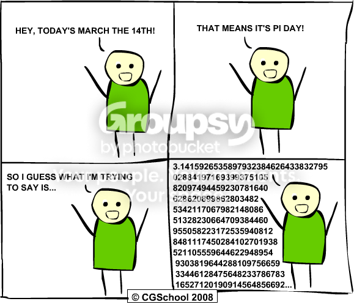

Just wondering if anybody here did anything for Pi Day. I personally didn't. 

I got apple pie in math. It was pretty much the best math class ever.Same here.


Quote: PiDay.OrgPlease wait while one million digits of pi load


Oh, and the billionth decimal digit of pi is nine.